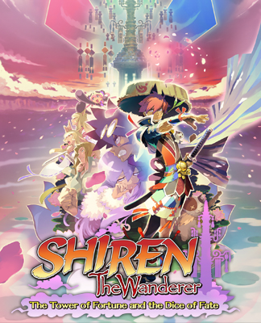

Hello! This is a fan site for the Shiren the Wanderer series.
It's a work-in-progress, so this page is a little rough to look at right now,
but we're currently working on comprehensive wikis for each game.
Shiren The Wanderer 2: Oni Assault! Shiren Castle!
Shiren The Wanderer: The Tower of Fortune and the Dice of Fate
Reddit: r/ShirenTheWanderer
Discord: https://discord.gg/5y7UDFc